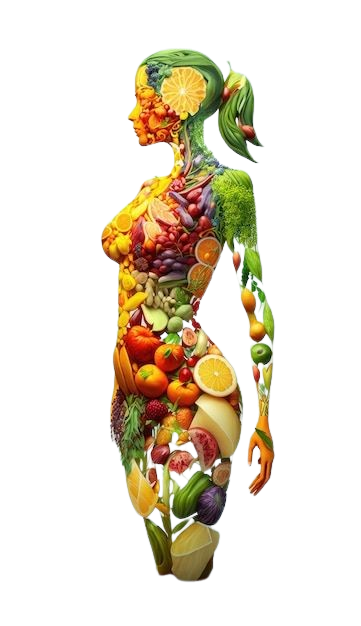

Ghid practic pentru gestionarea glicemiei
Stabilitatea glicemiei nu este doar despre evitarea creșterilor
bruște ale zahărului din sânge, ci și despre un stil de viață mai
sănătos. Micile schimbări în dieta zilnică și în activitățile tale
pot face o mare diferență. În această secțiune vei găsi sfaturi
practice pentru a-ți menține glicemia sub control, indiferent de
provocările zilnice.
